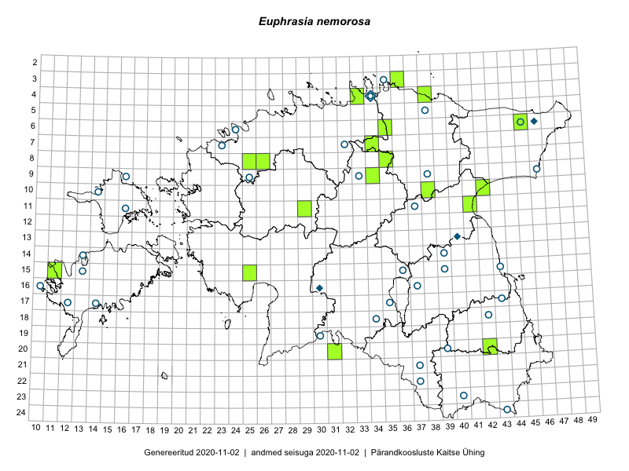

Euphrasia nemorosa
Orobanchaceae :: Euphrasia nemorosa (Pers.) Wallr. (61)

Kaart põhineb 61 kirjel:
herbaareksemplare 61
Taime kaasaegsed ja ajaloolised leiukohad asuvad 55 ruudus.
Tingmärgid ja leidudega ruutude arvud periooditi uues (u) ja 2005 andmestikus (v)
| █ | vahemik | u1 | v2 |
|---|---|---|---|
| █ | 2006–2020 | 18 | – |
| ◆/◇ | 1971–2005 | 4 | 0 |
| ○ | 1921–1970 | 35 | 0 |
| + | kuni 1920 | 0 | 0 |
| × | hävinud | – | 0 |
| ? | kaheldav | – | 0 |
| Ruut | Leidja(d) | Leiuaeg | Kirje |
|---|---|---|---|
| 11-29 | Peedu Saar, Ott Luuk | 2019-08-22 | TAA0149022: Euphrasia nemorosa (Pers.) Wallr. |
| 04-33 | Ott Luuk, Jaak-Albert Metsoja | 2019-08-07 | TAA0150238: Euphrasia nemorosa (Pers.) Wallr. |
| 04-38 | Ott Luuk, Jaak-Albert Metsoja | 2019-08-06 | TAA0150236: Euphrasia nemorosa (Pers.) Wallr. |
| 04-38 | Ott Luuk, Jaak-Albert Metsoja | 2019-08-06 | TAA0150237: Euphrasia nemorosa (Pers.) Wallr. |
| 08-26 | Toomas Kukk, Ilmar Uibopuu, Kadri Kuusksalu | 2017-08-08 | TAA0141653: Euphrasia nemorosa (Pers.) Wallr. |
| 08-26 | Toomas Kukk, Ilmar Uibopuu, Kadri Kuusksalu | 2017-08-08 | TAA0141676: Euphrasia nemorosa (Pers.) Wallr. |
| 06-35 | Ott Luuk, Peedu Saar | 2017-07-19 | TAA0142542: Euphrasia nemorosa (Pers.) Wallr. |
| 10-38 | Ott Luuk, Eerik Leibak | 2016-08-08 | TAA0139257: Euphrasia nemorosa (Pers.) Wallr. |
| 03-36 | Meeli Mesipuu, Liina Oja | 2016-07-26 | TAA0144010: Euphrasia nemorosa (Pers.) Wallr. |
| 20-31 | Meeli Mesipuu, Mari Metsoja | 2016-07-19 | TAA0144176: Euphrasia nemorosa (Pers.) Wallr. |
| 11-41 | Peedu Saar | 2015-08-22 | TAA0135143: Euphrasia nemorosa (Pers.) Wallr. |
| 08-25 | Tõnu Ploompuu | 2015-08-17 | TAA0145523: Euphrasia nemorosa (Pers.) Wallr. |
| 15-25 | Maret Gerz, Leena Gerz | 2015-08-08 | TAA0145516: Euphrasia nemorosa (Pers.) Wallr. |
| 10-42 | Illi Tarmu, Ülle Jõgar, Kai Rünk | 2015-07-29 | TAA0118880: Euphrasia nemorosa (Pers.) Wallr. |
| 20-42 | Vivika Väli, Ülo Väli | 2015-07-27 | TAA0132797: Euphrasia nemorosa (Pers.) Wallr. |
| 09-34 | Jana-Maria Habicht | 2015-07-25 | TAM0117623: Euphrasia nemorosa (Pers.) Wallr. |
| 06-45 | Thea Kull, Eerik Leibak | 2015-07-20 | TAA0116944: Euphrasia nemorosa (Pers.) Wallr. |
| 07-34 | Jana-Maria Habicht | 2015-07-20 | TAM0117620: Euphrasia nemorosa (Pers.) Wallr. |
| 07-34 | Jana-Maria Habicht | 2015-07-20 | TAM0117621: Euphrasia nemorosa (Pers.) Wallr. |
| 08-35 | Jana-Maria Habicht | 2015-07-14 | TAM0117618: Euphrasia nemorosa (Pers.) Wallr. |
| 15-11 | Toomas Kukk | 2015-07-01 | TAA0134371: Euphrasia nemorosa (Pers.) Wallr. |
| 13-40 | Ülo Niinemets | 1989-07-29 | TAA0037460: Euphrasia nemorosa (Pers.) Wallr. |
| 16-30 | E. Eik | 1983-07-19 | TU255996: Euphrasia nemorosa (Pers.) Wallr. |
| 06-46 | M. Kask | 1982-07-15 | TAA0037446: Euphrasia nemorosa (Pers.) Wallr. |
| 04-34 | M. Kask | 1975-08-06 | TAA0037104: Euphrasia nemorosa (Pers.) Wallr. |
| 16-30 | H. Märtinson | 1975-08-06 | TU256006: Euphrasia nemorosa (Pers.) Wallr. |
| 15-43 | L. Pihlapuu | 1969-08-18 | TU257134: Euphrasia nemorosa (Pers.) Wallr. |
| 06-45 | Liivia Laasimer | 1968-07-19 | TAA0037449: Euphrasia nemorosa (Pers.) Wallr. |
| 09-46 | Silvia Talts | 1961-08-15 | TAA0037152: Euphrasia nemorosa (Pers.) Wallr. |
| 16-10 | K. Pork | 1960-08-24 | TAA0037284: Euphrasia nemorosa (Pers.) Wallr. |
| 09-25 | Agnes Ojaveer, Taimi Piin, S. Pärn | 1960-08-05 | TAA0037138: Euphrasia nemorosa (Pers.) Wallr. |
| 07-23 | Malle Simson, Helga Tamm | 1960-07-26 | TAA0037120: Euphrasia nemorosa (Pers.) Wallr. |
| 06-24 | K. Lang, Ella Tammemägi | 1960-07-14 | TAA0037274: Euphrasia nemorosa (Pers.) Wallr. |
| 18-42 | Salme Kask | 1959-08-30 | TAA0037109: Euphrasia nemorosa (Pers.) Wallr. |
| 11-16 | H. Rebassoo | 1959-08-18 | TAA0037123: Euphrasia nemorosa (Pers.) Wallr. |
| 10-14 | H. Rebassoo | 1959-08-14 | TAA0037132: Euphrasia nemorosa (Pers.) Wallr. |
| 18-34 | Agnes Ojaveer | 1959-07-31 | TAA0037121: Euphrasia nemorosa (Pers.) Wallr. |
| 17-35 | Agnes Ojaveer, Visolde Puusepp | 1959-07-30 | TAA0037146: Euphrasia nemorosa (Pers.) Wallr. |
| 07-32 | E. Kask, Visolde Puusepp | 1958-08-19 | TAA0037476: Euphrasia nemorosa (Pers.) Wallr. |
| 09-33 | Linda Viljasoo | 1958-08-14 | TAA0037154: Euphrasia nemorosa (Pers.) Wallr. |
| 04-34 | Alma Saare | 1958-08-01 | TAA0037682: Euphrasia nemorosa (Pers.) Wallr. |
| 19-30 | Vilma Kuusk, Agnes Ojaveer | 1958-07-24 | TAA0037116: Euphrasia nemorosa (Pers.) Wallr. |
| 21-37 | Viive Kõvask, Helga Tamm | 1957-08-21 | TAA0037122: Euphrasia nemorosa (Pers.) Wallr. |
| 22-37 | Helga Tamm | 1957-08-20 | TAA0037140: Euphrasia nemorosa (Pers.) Wallr. |
| 20-39 | Salme Kask | 1957-08-14 | TAA0037589: Euphrasia nemorosa (Pers.) Wallr. |
| 24-43 | Helga Tamm | 1957-08 | TAA0037429: Euphrasia nemorosa (Pers.) Wallr. |
| 23-40 | M. Kask | 1957-07-31 | TAA0037506: Euphrasia nemorosa (Pers.) Wallr. |
| 11-37 | M. Kask | 1956-08-31 | TAA0037444: Euphrasia nemorosa (Pers.) Wallr. |
| 09-38 | M. Kask | 1956-07-30 | TAA0037466: Euphrasia nemorosa (Pers.) Wallr. |
| 15-36 | H. Kruus | 1956-07-12 | TAA0036774: Euphrasia nemorosa (Pers.) Wallr. |
| 17-14 | T. Timm | 1954-08-10 | TAA0037111: Euphrasia nemorosa (Pers.) Wallr. |
| 15-39 | Zinaida Izvekova | 1948-08-17 | TAA0037113: Euphrasia nemorosa (Pers.) Wallr. |
| 15-13 | Liivia Laasimer | 1948-08-08 | TAA0037112: Euphrasia nemorosa (Pers.) Wallr. |
| 14-13 | Liivia Laasimer | 1948-08-07 | TAA0037110: Euphrasia nemorosa (Pers.) Wallr. |
| 14-39 | Maret Kask | 1947-07-16 | TAA0037623: Euphrasia nemorosa (Pers.) Wallr. |
| 09-16 | Liivia Laasimer | 1946-07-31 | TAA0037115: Euphrasia nemorosa (Pers.) Wallr. |
| 16-37 | Elsa Varep | 1935-08-12 | TAA0037114: Euphrasia nemorosa (Pers.) Wallr. |
| 17-12 | B. Saarson | 1933-08-20 | TU255988: Euphrasia nemorosa (Pers.) Wallr. |
| 17-43 | C. Volmer | 1931-08-03 | TU255989: Euphrasia nemorosa (Pers.) Wallr. |
| 03-35 | Albert Üksip | 1928-08-03 | TU257266: Euphrasia nemorosa (Pers.) Wallr. |
| 05-38 | Gustav Vilbaste | 1926-07-23 | TAA0037696: Euphrasia nemorosa (Pers.) Wallr. |
Ruutude arv uue atlase andmekogu järgi. Muuhulgas arvestab vanemat herbaariumi, 2005. aasta atlase välitöölehtedelt uuesti digitaliseeritud andmeid jne. Uue atlase andmekogust pärinevad andmed on kaardile kantud siniste sümbolitega.↩︎
Ruutude arv 2005. aasta atlase (Kukk, T., Kull, T., Eesti taimede levikuatlas. Eesti Maaülikool, Põllumajandus- ja Keskkonnainstituut, Tartu, 2005) järgi. Andmeallikana on kasutatud levik.exe programmi, kus igas ruudus on registreeritud vaid uusim leid. Seetõttu on vanemate perioodide kohta andmed puudulikud. Kasutatud levik.exe andmestikus leidub mõningaid kõrvalekaldeid atlase trükis ilmunud versioonist, sagedamini tarnade ja käpaliste seas. Lisaks leidub selles andmestikus valik liike (peamiselt väheste leidudega tulnuktaimed), mille kaarte trükis ei avaldatud. Vana atlase andmed ruutudest, milles ei ole uue atlase andmekogus leide enne 2006. aastat, on kaardil esitatud punaste sümbolitega. Vana atlase andmetel hävinud ja kaheldavaid leiukohti pole hilisemate (taas)leidude põhjal korrigeeritud.↩︎